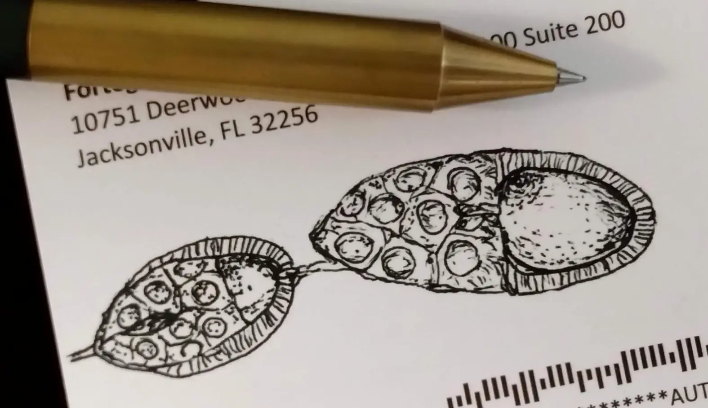

2026
Polyploidy reprograms epithelial cells for motility and phagocytosis via stress signaling
Journal of Cell Biology, 225: e202507096.

Polyploidy reprograms epithelial cells for motility and phagocytosis via stress signaling
Journal of Cell Biology, 225: e202507096.
Development and regulation: Evo-Devo and extended perspectives
Current Opinion in Insect Science, 69: 101370.
Drosophila models to explore the relationship between polyploid cells and cancer development
Experimental Medicine (Jikken Igaku), Vol. 43, No. 16. Japanese
Polyploid Cancer Cell Models in Drosophila
Genes, 15(1): 96.
Tumor-cell invasion initiates at invasion hotspots, an epithelial tissue-intrinsic microenvironment
bioRxiv, doi:10.1101/2021.09.28.462102.
Sequential oncogenic mutations influence cell competition
Current Biology, 31: 3984–3995.
Tumor hotspots: Tissue-intrinsic oncogenic niche
The Cell (Saibo), “Angiogenesis and immunity in tumor development.” Japanese
Mechanotransduction-mediated epithelial tissue repair through cell competition
Journal of Clinical and Experimental Medicine (Igaku No Ayumi), 274: 434–441. Japanese
The initial stage of tumorigenesis in Drosophila epithelial tissues
Advances in Experimental Medicine and Biology, 1167: 87–103.
Cell competition and tissue homeostasis through compensatory cellular growth
Journal of Japanese Biochemical Society, 9: 147–158. Japanese
Tissue-intrinsic tumor hotspots
The Cell (Saibo), “Tumor Microenvironment.” Japanese
Induction and diagnosis of tumors in Drosophila imaginal disc epithelia
Journal of Visualized Experiments, 125: e55901.
Systematic analysis of microRNAs in Drosophila epithelial tumors reveals tumor-enhancing and tumor-suppressing microRNAs
Oncotarget, 8: 108825–108839.
Tissue-intrinsic tumor hotspots: terroir for tumorigenesis
Trends in Cancer, 3: 259–268.
Epithelial tumors originate in tumor hotspots, a tissue-intrinsic microenvironment
PLoS Biology, 14(9): e1002537.
Growth of winner cells in cell competition—replacement and compensation
Journal of Clinical and Experimental Medicine (Igaku No Ayumi), Vol. 29, No. 9. Japanese
Compensatory tissue repair in cell competition
Seitai No Kagaku, Vol. 67, No. 2. Japanese
Compensatory cellular hypertrophy: the other strategy for tissue homeostasis
Trends in Cell Biology, 24: 230–237.
Regulation of broad by the Notch pathway affects timing of follicle cell development
Developmental Biology, 392: 52–61.
Tissue repair through cell competition and compensatory cellular hypertrophy in postmitotic epithelia
Developmental Cell, 25: 350–363.
Efficient EGFR signaling and dorsal-ventral axis patterning requires syntaxin-dependent Gurken trafficking
Developmental Biology, 373: 349–358.
Knudson Hypothesis
Cell Press Cell Picture Show: Cancer.
Cell competition and its implications for development and cancer
Journal of Genetics and Genomics, 38: 483–496.
Involvement of Lgl and Mahjong/VprBP in cell competition
PLoS Biology, 8: e1000422.
Mahjong-mediated regulation of cell competition
Experimental Medicine (Jikken Igaku), Vol. 29, No. 9. Japanese
Maternal effects on phenotypic plasticity in larvae of the salamander Hynobius retardatus
Oecologia, 160: 601–608.
Evolution acts on enhancer organization to fine-tune gradient threshold readouts
PLoS Biology, 6: e263.
P450 aromatase expression in the temperature-sensitive sexual differentiation of salamander (Hynobius retardatus) gonads
International Journal of Developmental Biology, 49: 417–425.
Spatio-temporal expression of a DAZ-like gene in the Japanese newt Cynops pyrrhogaster that has no germ plasm
Development Genes and Evolution, 214: 615–627.
Conversion of red blood cells from the larval to the adult type during metamorphosis in Xenopus: specific removal of mature larval-type RBCs by apoptosis
International Journal of Developmental Biology, 44: 373–380.
Homoiogenetic regulation through the ectoderm on localized expression of the hatching gland phenotype in the head area of Xenopus embryos
Development Growth and Differentiation, 42: 459–467.